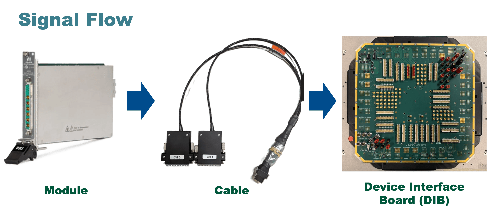
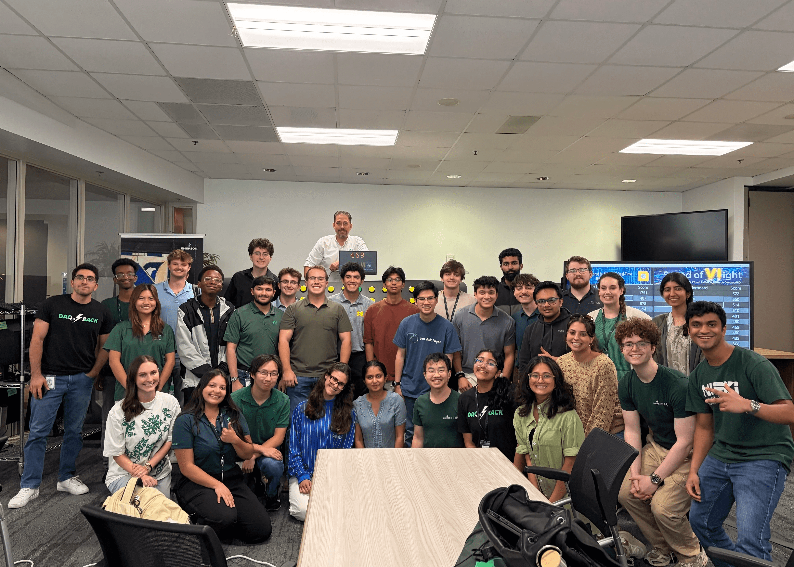
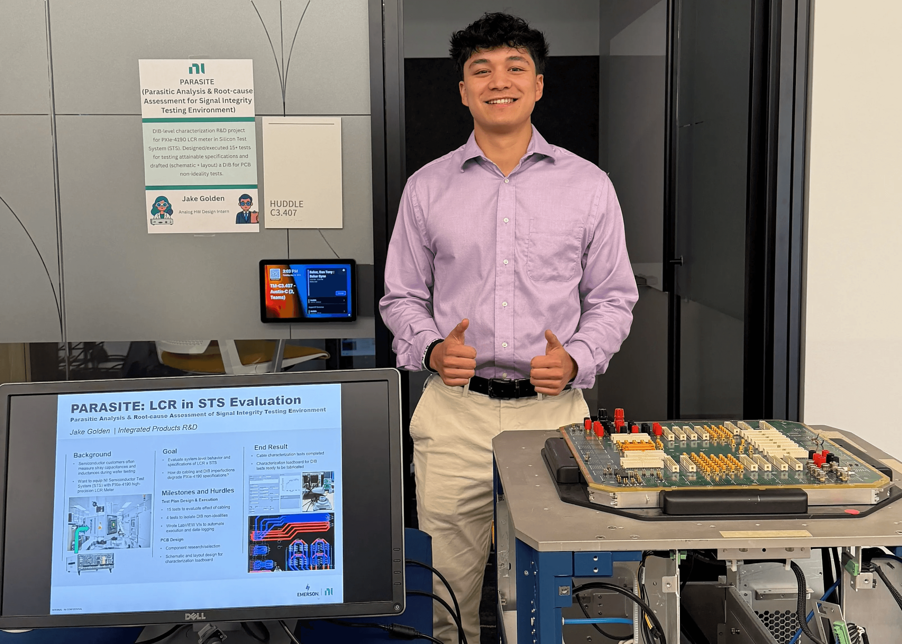
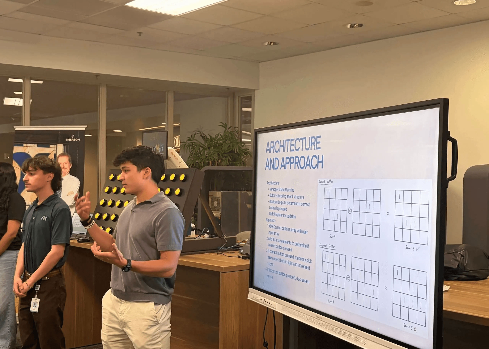
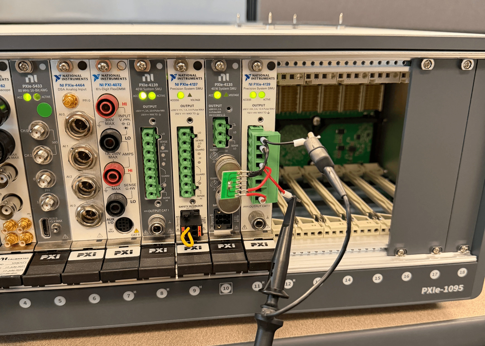

Goal
Characterize the performance and specifications of NI's high-precision dual LCR/SMU meter (PXIe-4190 module) inside NI Semiconductor Test System (STS)
STS is an ATE platform that takes wafer measurements using NI's instrumentation modules
Wafers contact metal probes on a device-interface board (DIB), which routes signals down to internal modules
Module-level specifications for PXIe-4190 already known; needed to understand specifications at spring-pin plane
Cable and DIB each add parasitics that degrade high-precision measurements (especially at very low or high impedances)

Evaluation Questions: PXIe-4190 in STS
Accuracy/resolution across frequency and impedance range
Ability to compensate out added system components
Compensation stability with temperature/humidity
Settling time after DC bias change
Optimal measurement time/source delay settings with cable
DIB non-idealities




Siemens Xpedition
Component Tradeoff Analysis
V&V Test Protocol Development
LabVIEW
NI-DCPower
NI-DAQmx